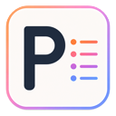

<title>Polaris Clay 设计体系</title>
<meta name="claude:viewport-fit-sides" content="cover">
<link rel="preconnect" href="https://fonts.googleapis.com">
<link rel="preconnect" href="https://fonts.gstatic.com" crossorigin>
<link href="https://fonts.googleapis.com/css2?family=Inter:wght@400..700&family=Lora:ital,wght@1,600&family=Newsreader:ital,opsz,wght@0,6..72,300..700;1,6..72,300..700&display=swap" rel="stylesheet">
<style>

:root {
  /* Clay：品牌赤陶色阶，500 为现有 #b85c3a */
  --clay-50:#FBF4F0; --clay-100:#F5E6DE; --clay-200:#EBCBBB; --clay-300:#E69A78; --clay-400:#CC7F5E;
  --clay-500:#B85C3A; --clay-600:#A04C2F; --clay-700:#823D27; --clay-800:#64301F; --clay-900:#45231A;
  /* Paper：低彩度暖中性色 */
  --paper-0:#FFFFFF; --paper-25:#FAFAF8; --paper-50:#F4F3F0; --paper-100:#EDEBE7; --paper-200:#E0DDD7;
  --paper-300:#C9C5BD; --paper-500:#77726A; --paper-600:#57534C; --paper-900:#2A2724;
  --ink-950:#1A1918; --ink-900:#222120; --ink-850:#2B2A28; --ink-800:#33312E; --ink-700:#3A3835;
  --ink-600:#514E49; --ink-400:#9A958C; --ink-300:#C4C0B8; --ink-50:#F3F1ED;

  --bg: var(--paper-25); --bg-subtle: var(--paper-50); --bg-muted: var(--paper-100); --bg-elevated: var(--paper-0);
  --text: var(--paper-900); --text-2: var(--paper-600); --text-3: var(--paper-500);
  --border: var(--paper-200); --border-strong: var(--paper-300);
  --accent: var(--clay-500); --accent-hover: var(--clay-600); --accent-fg:#fff; --accent-subtle: var(--clay-50); --accent-text: var(--clay-600);
  --success:#4F7A55; --warning:#9A6418; --danger:#B42318; --info:#3F6C8F;

  --serif: "Newsreader", Georgia, "Songti SC", "Noto Serif CJK SC", serif;
  --sans: "Inter", ui-sans-serif, system-ui, -apple-system, "PingFang SC", sans-serif;
  --mono: ui-monospace, SFMono-Regular, Menlo, monospace;
  color-scheme: light;
}
@media (prefers-color-scheme: dark) { :root:not([data-theme="light"]) {
  --bg: var(--ink-950); --bg-subtle: var(--ink-850); --bg-muted: var(--ink-800); --bg-elevated: var(--ink-900);
  --text: var(--ink-50); --text-2: var(--ink-300); --text-3: var(--ink-400);
  --border: var(--ink-700); --border-strong: var(--ink-600);
  --accent: var(--clay-300); --accent-hover:#F0B093; --accent-fg:#271812; --accent-subtle:#35251F; --accent-text: var(--clay-300);
  --success:#8DBB92; --warning:#E2B36A; --danger:#F2A39B; --info:#93BCDD; color-scheme: dark;
} }
:root[data-theme="dark"] {
  --bg: var(--ink-950); --bg-subtle: var(--ink-850); --bg-muted: var(--ink-800); --bg-elevated: var(--ink-900);
  --text: var(--ink-50); --text-2: var(--ink-300); --text-3: var(--ink-400);
  --border: var(--ink-700); --border-strong: var(--ink-600);
  --accent: var(--clay-300); --accent-hover:#F0B093; --accent-fg:#271812; --accent-subtle:#35251F; --accent-text: var(--clay-300);
  --success:#8DBB92; --warning:#E2B36A; --danger:#F2A39B; --info:#93BCDD; color-scheme: dark;
}

* { box-sizing: border-box; }
body { margin:0; background:var(--bg); color:var(--text); font:14px/1.6 var(--sans); -webkit-font-smoothing:antialiased; }
main { max-width:1040px; margin:0 auto; padding-block:48px 96px; padding-left:max(16px, env(safe-area-inset-left, 0px)); padding-right:max(16px, env(safe-area-inset-right, 0px)); }
header.top { display:flex; justify-content:space-between; align-items:flex-start; gap:16px; flex-wrap:wrap; margin-bottom:40px; }
.mark { font-family:"Lora", Georgia, serif; font-style:italic; font-weight:600; font-size:22px; letter-spacing:-.035em; color:var(--text); display:flex; align-items:center; gap:8px; }
.mark svg { width:18px; height:18px; color:var(--accent); }
h1 { font-family:var(--serif); font-weight:400; font-size:clamp(36px,6vw,56px); line-height:1.08; letter-spacing:-.025em; margin:20px 0 12px; max-width:16ch; }
.lead { color:var(--text-2); font-size:16px; max-width:60ch; margin:0; }
button.theme { font:500 12px var(--sans); border:1px solid var(--border-strong); background:var(--bg-elevated); color:var(--text); border-radius:999px; padding:7px 14px; cursor:pointer; }
section { margin-top:64px; }
.eyebrow { font:600 11px/1 var(--sans); letter-spacing:.08em; text-transform:uppercase; color:var(--accent-text); margin-bottom:10px; }
h2 { font-family:var(--serif); font-weight:400; font-size:30px; line-height:1.2; letter-spacing:-.015em; margin:0 0 8px; }
h3 { font:600 13px/1.4 var(--sans); margin:28px 0 12px; color:var(--text); }
p.note { color:var(--text-2); margin:0 0 20px; max-width:68ch; }
.card { background:var(--bg-elevated); border:1px solid var(--border); border-radius:12px; padding:20px; }

/* 现状评估 */
.findings { display:grid; gap:10px; grid-template-columns:repeat(auto-fit,minmax(280px,1fr)); }
.finding { display:grid; grid-template-columns:auto 1fr; gap:4px 12px; align-items:start; }
.tag { font:600 10px/1 var(--sans); padding:5px 7px; border-radius:6px; letter-spacing:.04em; white-space:nowrap; margin-top:2px; }
.tag.keep { background:color-mix(in srgb,var(--success) 14%,transparent); color:var(--success); }
.tag.fix { background:var(--accent-subtle); color:var(--accent-text); }
.finding b { font-weight:600; }
.finding span.d { grid-column:2; color:var(--text-2); font-size:13px; }
code { font:12px var(--mono); background:var(--bg-muted); padding:1px 5px; border-radius:4px; }

/* 色阶 */
.scale { display:grid; grid-template-columns:repeat(10,1fr); border-radius:12px; overflow:hidden; border:1px solid var(--border); }
.scale.paper { grid-template-columns:repeat(9,1fr); }
.sw { min-height:96px; padding:10px 8px; display:flex; flex-direction:column; justify-content:flex-end; font:500 10.5px/1.35 var(--mono); }
.sw b { font:600 11px var(--sans); }
@media (max-width:640px) { .scale, .scale.paper { grid-template-columns:repeat(5,1fr); } .sw { min-height:72px; } }
.roles { display:grid; gap:12px; grid-template-columns:repeat(auto-fit,minmax(220px,1fr)); }
.role { display:flex; gap:12px; align-items:center; padding:12px; border:1px solid var(--border); border-radius:10px; background:var(--bg-elevated); }
.chip { width:36px; height:36px; border-radius:8px; border:1px solid var(--border); flex:none; }
.role div { font-size:12px; color:var(--text-2); line-height:1.45; }
.role div b { color:var(--text); font:600 12px var(--mono); display:block; }
.contrast { width:100%; border-collapse:collapse; font-size:13px; }
.contrast td, .contrast th { padding:9px 10px; border-bottom:1px solid var(--border); text-align:left; }
.contrast th { font-weight:600; color:var(--text-2); font-size:12px; }
.ok { color:var(--success); font-weight:600; } .warn { color:var(--warning); font-weight:600; }
.tablewrap { overflow-x:auto; }

/* 字体 */
.type-roles { display:grid; gap:12px; grid-template-columns:repeat(auto-fit,minmax(240px,1fr)); }
.type-role .big { font-size:44px; line-height:1.1; margin:6px 0 10px; }
.type-role .meta { font-size:12px; color:var(--text-2); }
.specimen { display:grid; grid-template-columns:120px 1fr; gap:6px 20px; align-items:baseline; padding:14px 0; border-bottom:1px solid var(--border); }
.specimen .k { font:500 11px/1.5 var(--mono); color:var(--text-3); }
@media (max-width:640px) { .specimen { grid-template-columns:1fr; } }

/* Logo 对比 */
.logo-grid { display:grid; gap:12px; grid-template-columns:repeat(auto-fit,minmax(300px,1fr)); }
.logo-card { border:1px solid var(--border); border-radius:12px; overflow:hidden; background:var(--bg-elevated); }
.logo-stage { display:grid; grid-template-columns:1fr 1fr; }
.logo-stage > div { padding:28px 18px; display:flex; align-items:center; justify-content:center; gap:8px; min-height:110px; }
.logo-stage .l { background:#FAFAF8; color:#2A2724; } .logo-stage .d { background:#1A1918; color:#F3F1ED; }
.logo-stage svg { width:22px; height:22px; color:#B85C3A; flex:none; } .logo-stage .d svg { color:#E69A78; }
.wm-lora { font-family:"Lora", Georgia, serif; font-style:italic; font-weight:600; font-size:30px; letter-spacing:-.035em; }
.wm-news { font-family:"Newsreader", Georgia, serif; font-style:italic; font-weight:600; font-variation-settings:"opsz" 72; font-size:32px; letter-spacing:-.025em; }
.logo-body { padding:16px 18px; font-size:13px; color:var(--text-2); }
.logo-body h4 { margin:0 0 6px; font:600 13px var(--sans); color:var(--text); display:flex; gap:8px; align-items:center; }
.logo-body ul { margin:8px 0 0; padding-left:18px; } .logo-body li { margin:3px 0; }
.clash { margin-top:12px; display:flex; flex-wrap:wrap; gap:12px; }
.clash > div { flex:1 1 280px; border:1px dashed var(--border-strong); border-radius:10px; padding:16px; }
.clash .row { display:flex; align-items:baseline; gap:6px; font-size:20px; margin:6px 0 8px; }
.clash small { font-size:12px; color:var(--text-3); }
.verdict { margin-top:16px; padding:16px 18px; border-left:3px solid var(--accent); background:var(--accent-subtle); border-radius:0 10px 10px 0; font-size:14px; }

/* 示例面板 */
.demo-wrap { display:grid; gap:16px; grid-template-columns:repeat(auto-fit,minmax(300px,1fr)); }
.panel { --bg:var(--paper-25); --bg-subtle:var(--paper-50); --bg-muted:var(--paper-100); --bg-elevated:#fff; --text:var(--paper-900); --text-2:var(--paper-600); --text-3:var(--paper-500); --border:var(--paper-200); --accent:var(--clay-500); --accent-fg:#fff; --accent-subtle:var(--clay-50); --accent-text:var(--clay-600);
  background:var(--bg); color:var(--text); border:1px solid var(--border); border-radius:14px; overflow:hidden; font-size:13px; }
.panel.dark { --bg:var(--ink-950); --bg-subtle:var(--ink-850); --bg-muted:var(--ink-800); --bg-elevated:var(--ink-900); --text:var(--ink-50); --text-2:var(--ink-300); --text-3:var(--ink-400); --border:var(--ink-700); --accent:var(--clay-300); --accent-fg:#271812; --accent-subtle:#35251F; --accent-text:var(--clay-300); }
.p-head { display:flex; align-items:center; gap:8px; padding:12px 14px; border-bottom:1px solid var(--border); }
.p-head .wm-lora { font-size:20px; color:var(--text); } .p-head svg { width:16px; height:16px; color:var(--accent); }
.p-tabs { display:flex; gap:4px; margin:12px 14px 4px; padding:3px; background:var(--bg-muted); border-radius:999px; }
.p-tabs span { flex:1; text-align:center; padding:5px 0; border-radius:999px; font-weight:500; font-size:12px; color:var(--text-2); }
.p-tabs span.on { background:var(--bg-elevated); color:var(--text); box-shadow:0 1px 3px rgb(0 0 0 / .08); }
.p-list { padding:8px 10px 4px; }
.p-item { display:flex; gap:8px; align-items:baseline; padding:6px 8px; border-radius:8px; color:var(--text-2); }
.p-item.h2 { padding-left:22px; } .p-item .n { font:500 11px var(--mono); color:var(--text-3); min-width:18px; }
.p-item.on { background:var(--accent-subtle); color:var(--accent-text); font-weight:500; } .p-item.on .n { color:var(--accent-text); }
.p-read { margin:6px 14px 14px; padding:14px; background:var(--bg-elevated); border:1px solid var(--border); border-radius:12px; }
.p-read h5 { font-family:var(--serif); font-weight:500; font-size:19px; line-height:1.3; margin:0 0 6px; letter-spacing:-.01em; }
.p-read p { margin:0; font-family:var(--serif); font-size:15px; line-height:1.6; color:var(--text-2); }
.p-cta { display:flex; gap:8px; padding:0 14px 16px; }
.btn { font:600 12px var(--sans); border-radius:999px; padding:9px 16px; border:1px solid transparent; }
.btn.pri { background:var(--accent); color:var(--accent-fg); } .btn.sec { background:var(--bg-elevated); border-color:var(--border); color:var(--text); }
.pro { margin:0 14px 16px; border-radius:18px; padding:20px 18px; color:#fff; background-image:radial-gradient(circle, rgb(0 0 0 / 13%) 1.1px, transparent 1.2px), linear-gradient(var(--clay-600), var(--clay-800)); background-size:7px 7px,100% 100%; }
.pro h6 { margin:0; font-family:"Lora", Georgia, serif; font-style:italic; font-weight:600; font-size:22px; letter-spacing:-.035em; } .pro p { margin:4px 0 14px; color:var(--clay-100); font-size:12px; }
.pro .btn { display:block; text-align:center; background:linear-gradient(90deg,#F6E8FF,#FFF 50%,#F8EADF); color:var(--clay-700); }


/* Logo 提案 */
.icon-row { display:grid; gap:12px; grid-template-columns:repeat(auto-fit,minmax(min(100%,320px),1fr)); }
.icon-card { border:1px solid var(--border); border-radius:12px; background:var(--bg-elevated); overflow:hidden; min-width:0; }
.icon-card.pick { border-color:var(--accent); box-shadow:0 0 0 1px var(--accent); }
.icon-stage { display:grid; grid-template-columns:1fr 1fr; }
.icon-stage > div { display:flex; align-items:center; justify-content:center; gap:12px; padding:20px 8px; }
.icon-stage .l { background:#F1EFEA; } .icon-stage .d { background:#202124; }
.icon-stage svg.big { width:84px; height:84px; } .icon-stage svg.s32 { width:32px; height:32px; } .icon-stage svg.s16 { width:16px; height:16px; }
.icon-stage img { width:84px; height:84px; max-width:100%; }
.icon-card .logo-body h4 .badge { font:600 10px var(--sans); padding:3px 6px; border-radius:5px; background:var(--accent-subtle); color:var(--accent-text); }
.lockups { display:flex; flex-wrap:wrap; gap:12px; margin-top:12px; }
.lockup { flex:1 1 280px; display:flex; align-items:center; gap:10px; padding:20px; border-radius:12px; }
.lockup.l { background:#FAFAF8; color:#2A2724; } .lockup.d { background:#1A1918; color:#F3F1ED; }
.lockup svg { width:34px; height:34px; flex:none; }

pre { margin:0; padding:18px; background:var(--bg-subtle); border:1px solid var(--border); border-radius:12px; overflow-x:auto; font:12px/1.65 var(--mono); color:var(--text); }
footer { margin-top:64px; color:var(--text-3); font-size:12px; }
</style>
<main>
<svg width="0" height="0" style="position:absolute"><symbol id="star" viewBox="0 0 24 24"><path fill="currentColor" d="M12 1.5l2.2 7.3 7.3 2.2-7.3 2.2L12 22.5l-2.2-9.3L2.5 11l7.3-2.2z"/></symbol></svg>

<svg width="0" height="0" style="position:absolute" aria-hidden="true">
  <symbol id="icoA" viewBox="0 0 512 512"><rect width="512" height="512" rx="116" fill="#B85C3A"/><path fill="#FFF7EF" d="M256 70Q268 184 366 198Q268 212 256 442Q244 212 146 198Q244 184 256 70Z"/></symbol>
  <symbol id="icoB" viewBox="0 0 512 512"><rect width="512" height="512" rx="116" fill="#B85C3A"/><text x="128" y="408" font-family="Lora, Georgia, serif" font-style="italic" font-weight="600" font-size="380" fill="#FFF7EF">P</text><path fill="#FFF7EF" d="M384 92Q389 136 432 142Q389 148 384 192Q379 148 336 142Q379 136 384 92Z"/></symbol>
  <symbol id="icoC" viewBox="0 0 512 512"><rect width="512" height="512" rx="116" fill="#B85C3A"/><path fill="#FFF7EF" d="M150 116Q157 168 210 176Q157 184 150 236Q143 184 90 176Q143 168 150 116Z"/><rect x="246" y="156" width="176" height="40" rx="20" fill="#FFF7EF"/><circle cx="150" cy="286" r="20" fill="#FFF7EF" opacity=".72"/><rect x="246" y="266" width="132" height="40" rx="20" fill="#FFF7EF" opacity=".72"/><circle cx="150" cy="376" r="20" fill="#FFF7EF" opacity=".5"/><rect x="246" y="356" width="96" height="40" rx="20" fill="#FFF7EF" opacity=".5"/></symbol>
  <symbol id="icoC1" viewBox="0 0 512 512"><rect width="512" height="512" rx="116" fill="#B85C3A"/><path fill="#FFF7EF" d="M168 124Q177.5 190.5 244 200Q177.5 209.5 168 276Q158.5 209.5 92 200Q158.5 190.5 168 124Z"/><rect x="276" y="166" width="140" height="68" rx="34" fill="#FFF7EF"/><rect x="204" y="288" width="212" height="68" rx="34" fill="#FFF7EF"/></symbol><symbol id="icoC2" viewBox="0 0 512 512"><rect width="512" height="512" rx="116" fill="#B85C3A"/><path fill="#FFF7EF" d="M150 92Q157.5 144.5 210 152Q157.5 159.5 150 212Q142.5 159.5 90 152Q142.5 144.5 150 92Z"/><rect x="240" y="124" width="176" height="56" rx="28" fill="#FFF7EF"/><rect x="240" y="230" width="136" height="56" rx="28" fill="#FFF7EF"/><rect x="240" y="336" width="96" height="56" rx="28" fill="#FFF7EF"/></symbol><symbol id="icoC3" viewBox="0 0 512 512"><rect width="512" height="512" rx="116" fill="#B85C3A"/><path fill="#FFF7EF" d="M180 160Q192.0 244.0 276 256Q192.0 268.0 180 352Q168.0 268.0 84 256Q168.0 244.0 180 160Z"/><rect x="304" y="220" width="112" height="72" rx="36" fill="#FFF7EF"/></symbol>
</svg>

<header class="top">
  <div>
    <div class="mark"><svg><use href="#star"/></svg>Polaris</div>
    <h1>Polaris Clay 设计体系</h1>
    <p class="lead">以赤陶色为唯一品牌色、暖纸色为底；Lora SemiBold Italic 负责品牌字标，Newsreader 负责“阅读与标题”，Inter 负责“界面与操作”。已落地到 <code>tokens.css</code> / <code>styles.css</code> / <code>window.css</code>，见 07 Spec。</p>
  </div>
  <button class="theme" id="theme">切换深色</button>
</header>

<section>
  <div class="eyebrow">01 · 现状评估</div>
  <h2>当前设计的问题与可保留项</h2>
  <p class="note">基于最新提交 <code>a3d9778</code> 与未提交的 Pro / Billing 改动。</p>
  <div class="findings">
    <div class="card finding"><span class="tag keep">保留</span><b>赤陶主色 #B85C3A</b><span class="d">白字对比 4.5:1，过 AA；比 Claude 的 #D97757 更深更沉，既有血缘又不撞色。直接定为 Clay-500。</span></div>
    <div class="card finding"><span class="tag keep">保留</span><b>Inter + Newsreader 分工</b><span class="d">Billing 标题已用 Newsreader 400，界面用 Inter，方向正确，需推广为全局规则。</span></div>
    <div class="card finding"><span class="tag fix">修正</span><b>两套品牌色并存</b><span class="d"><code>tokens.css</code> 与 <code>styles.css</code> 仍是靛蓝 #4F46E5，只有侧边栏在 <code>window.css</code> 里覆盖成赤陶。页内导航、设置面板与侧边栏颜色不一致。</span></div>
    <div class="card finding"><span class="tag fix">修正</span><b>中性色刚从暖改成纯灰</b><span class="d">#FAF9F7 → #FBFBFB、#282522 → #313131。纯灰配赤陶会显冷、“像贴上去的”；Claude 的质感恰恰来自暖底。建议回到暖色，但彩度压低到几乎察觉不到（见 Paper 色阶）。</span></div>
    <div class="card finding"><span class="tag fix">修正</span><b>次要 / 三级文字同值</b><span class="d"><code>--polaris-text-secondary</code> 与 <code>-tertiary</code> 都是 #737373，层级失效。</span></div>
    <div class="card finding"><span class="tag fix">修正</span><b>赤陶色硬编码散落</b><span class="d">#98482D、#A65A3E、#7D3D29、#A45436、#633723、#773B27、#763A27 等 10+ 个近似值。统一收进 Clay 十级色阶。</span></div>
    <div class="card finding"><span class="tag fix">修正</span><b>深色模式硬编码</b><span class="d">套餐切换滑块 <code>background:#fff</code>、选中文字 <code>#313131</code>，深色下会出现白块。</span></div>
    <div class="card finding"><span class="tag fix">修正</span><b>Lora 与 Newsreader 同屏打架</b><span class="d">Billing 头部 Lora 字标紧挨 Newsreader 20px 标题，两种相近衬线体并排，见 04。</span></div>
  </div>
</section>

<section>
  <div class="eyebrow">02 · 色彩</div>
  <h2>Clay 赤陶 + Paper 暖纸</h2>
  <p class="note">一个品牌色、一组中性色、四个语义色。赤陶只用于“当前位置、主操作、品牌时刻”，面积控制在 10% 以内，其余交给中性色。</p>

  <h3>Clay · 品牌色阶</h3>
  <div class="scale" id="clay"></div>
  <h3>Paper · 浅色中性 / Ink · 深色中性</h3>
  <div class="scale paper" id="paper"></div>
  <div class="scale paper" id="ink" style="margin-top:8px"></div>

  <h3>语义 Token（随主题切换）</h3>
  <div class="roles" id="roles"></div>

  <h3>Pro 珠光（唯一例外）</h3>
  <div class="roles">
    <div class="role" style="grid-column:1/-1"><span class="chip" style="width:120px;background:linear-gradient(90deg,#F6E8FF,#FFF 50%,#F8EADF)"></span><div><b>--polaris-pro-pearl</b>linear-gradient(90deg, #F6E8FF, #FFF 50%, #F8EADF)。与 Recap 的 Pro 风格一致，是两款产品共用的付费标识。只用于 Pro 入口按钮和付费页结尾的购买按钮，文字用 Clay-700；不用于普通按钮、背景或插图。</div></div>
  </div>

  <h3>关键对比度</h3>
  <div class="card tablewrap" style="padding:4px 10px">
  <table class="contrast">
    <tr><th>组合</th><th>浅色</th><th>深色</th><th>结论</th></tr>
    <tr><td>正文 text / bg</td><td>#2A2724 / #FAFAF8 · 14.2</td><td>#F3F1ED / #1A1918 · 15.6</td><td class="ok">AAA</td></tr>
    <tr><td>三级文字 text-3 / bg</td><td>#77726A · 4.6</td><td>#9A958C · 5.9</td><td class="ok">AA</td></tr>
    <tr><td>主按钮 accent-fg / accent</td><td>#FFF / #B85C3A · 4.5</td><td>#271812 / #E69A78 · 7.6</td><td class="ok">AA</td></tr>
    <tr><td>赤陶文字链接 accent-text / bg</td><td>#A04C2F · 5.6</td><td>#E69A78 · 7.7</td><td class="ok">AA</td></tr>
    <tr><td>Clay-500 小字直接放 bg 上</td><td>#B85C3A · 4.3</td><td>—</td><td class="warn">小字用 Clay-600</td></tr>
  </table>
  </div>
</section>

<section>
  <div class="eyebrow">03 · 字体</div>
  <h2>衬线负责阅读，无衬线负责操作</h2>
  <p class="note">与 Claude 的思路一致：衬线体传递“编辑感、可读”，无衬线体保证小字号界面清晰。Newsreader 专为屏幕长文设计、带光学尺寸轴（opsz 6–72），比 Tiempos 免费，非常适合 Polaris 的“章节阅读”场景。</p>
  <div class="type-roles">
    <div class="card type-role"><div class="eyebrow">Display / Reading</div><div class="big" style="font-family:var(--serif);font-weight:400">Newsreader</div><div class="meta">标题、章节阅读正文、付费页、空状态。字重 400–500，标题 opsz 自动；中文回落 Songti SC / Noto Serif SC。</div></div>
    <div class="card type-role"><div class="eyebrow">Interface</div><div class="big" style="font-family:var(--sans);font-weight:500;letter-spacing:-.02em">Inter</div><div class="meta">大纲列表、按钮、标签、设置。12–14px，字重 400 / 500 / 600；中文回落 PingFang SC。</div></div>
    <div class="card type-role"><div class="eyebrow">Wordmark · 已定</div><div class="big wm-lora" style="font-size:44px">Polaris Pro</div><div class="meta">Lora SemiBold Italic，字距 -0.035em，关闭 font-synthesis。“Polaris”与“Polaris Pro”整体同一字体，不拆后缀。</div></div>
  </div>

  <h3>字号阶梯（侧边栏 360–480px 宽）</h3>
  <div class="card" style="padding:4px 20px">
    <div class="specimen"><div class="k">display<br>serif 400 · 32/36<br>-0.025em</div><div style="font:400 32px/1.12 var(--serif);letter-spacing:-.025em">读完整段对话，只需一眼</div></div>
    <div class="specimen"><div class="k">title<br>serif 500 · 22/28</div><div style="font:500 22px/1.27 var(--serif);letter-spacing:-.015em">Chapter 3 · Deploying the worker</div></div>
    <div class="specimen"><div class="k">heading<br>serif 500 · 17/24</div><div style="font:500 17px/1.4 var(--serif)">为什么选择 Durable Objects</div></div>
    <div class="specimen"><div class="k">reading<br>serif 400 · 15/24</div><div style="font:400 15px/1.6 var(--serif);color:var(--text-2);max-width:58ch">Each conversation is split into chapters at its headings, so long answers read like a well-edited book rather than an endless scroll.</div></div>
    <div class="specimen"><div class="k">body<br>sans 400 · 13/20</div><div style="font:400 13px/1.54 var(--sans)">点击任意 Maker 跳转到原文位置，滚动时大纲自动高亮。</div></div>
    <div class="specimen"><div class="k">label<br>sans 500 · 12/16</div><div style="font:500 12px/1.33 var(--sans)">Navigation · Chapters · Settings</div></div>
    <div class="specimen" style="border:0"><div class="k">caption<br>sans 600 · 11/14<br>+0.08em 大写</div><div style="font:600 11px/1.27 var(--sans);letter-spacing:.08em;text-transform:uppercase;color:var(--text-3)">What's new · v1.8</div></div>
  </div>
  <p class="note" style="margin-top:14px">落地注意：当前 <code>public/fonts</code> 只有 Newsreader Regular 400 静态字，需要换成可变字体（roman + italic，含 opsz、wght 轴，Latin 子集），否则 500 字重与斜体字标都会被浏览器伪造。</p>
</section>

<section>
  <div class="eyebrow">04 · Logo 字体评估</div>
  <h2>结论：保留 Lora SemiBold Italic</h2>
  <p class="note">Lora 的书法感更强、更有辨识度。评估中发现的风险是它与 Newsreader 并排时细节打架；落地时通过“品牌词整体用 Lora”的规则化解，下面保留对比过程供参考。</p>
  <div class="logo-grid">
    <div class="logo-card">
      <div class="logo-stage"><div class="l"><svg><use href="#star"/></svg><span class="wm-lora">Polaris</span></div><div class="d"><svg><use href="#star"/></svg><span class="wm-lora">Polaris</span></div></div>
      <div class="logo-body"><h4>A · 采用：Lora SemiBold Italic</h4>
        <ul><li>笔画对比高、收笔带钩，个性更强</li><li>只用于品牌词：Polaris、Polaris Pro、Pro 卡片标题</li><li>不与 Newsreader 在同一个词组里混排</li></ul></div>
    </div>
    <div class="logo-card">
      <div class="logo-stage"><div class="l"><svg><use href="#star"/></svg><span class="wm-news">Polaris</span></div><div class="d"><svg><use href="#star"/></svg><span class="wm-news">Polaris</span></div></div>
      <div class="logo-body"><h4>B · 备选（未采用）：Newsreader SemiBold Italic</h4>
        <ul><li>与标题同族，品牌声音统一（Claude 也是字标与标题同一气质）</li><li>大光学尺寸下斜体更锐利、更“编辑部”</li><li>可删除 Lora 文件，少一个请求</li></ul></div>
    </div>
  </div>
  <div class="clash">
    <div><small>现状 · Billing 头部（Lora 字标 + Newsreader 标题）</small><div class="row"><span class="wm-lora" style="font-size:20px">Polaris</span><span style="font-family:var(--serif);font-weight:400">Pro</span></div><small>两个 P 的衬线、斜度、字怀明显不一致</small></div>
    <div><small>已落地 · 品牌词整体 Lora</small><div class="row"><span class="wm-lora" style="font-size:20px">Polaris Pro</span></div><small>“Pro”与“Polaris”同字体、同字距，作为一个整体字标</small></div>
  </div>
  <div class="verdict"><b>规则：</b>Lora 只用于品牌词，并且品牌词整体使用（Polaris / Polaris Pro / Go Pro）；标题、套餐名、正文分别交给 Newsreader 与 Inter。同一行内不出现 Lora + Newsreader 组合。</div>
</section>

<section>
  <div class="eyebrow">05 · 应用示例</div>
  <h2>侧边栏</h2>
  <p class="note">赤陶只出现在：星标、当前所在 Maker、主按钮、Pro 卡片。字标与 Pro 卡片标题均为 Lora。</p>
  <div class="demo-wrap">
    <div class="panel" id="demoL"></div>
    <div class="panel dark" id="demoD"></div>
  </div>
</section>

<section>
  <div class="eyebrow">06 · Token</div>
  <h2>替换 <code style="font-size:20px">tokens.css</code> 的核心变量</h2>
  <p class="note">写入 <code>tokens.css</code>，删掉 <code>window.css</code> 顶部那段覆盖和 <code>styles.css</code> 的靛蓝；组件里的赤陶硬编码改为引用 <code>--polaris-clay-*</code>。</p>
<pre>:root {
  /* Clay */
  --polaris-clay-50:#FBF4F0; --polaris-clay-100:#F5E6DE; --polaris-clay-200:#EBCBBB;
  --polaris-clay-300:#E69A78; --polaris-clay-400:#CC7F5E; --polaris-clay-500:#B85C3A;
  --polaris-clay-600:#A04C2F; --polaris-clay-700:#823D27; --polaris-clay-800:#64301F; --polaris-clay-900:#45231A;

  /* Light */
  --polaris-bg:#FAFAF8;  --polaris-bg-subtle:#F4F3F0; --polaris-bg-muted:#EDEBE7; --polaris-bg-elevated:#FFFFFF;
  --polaris-text:#2A2724; --polaris-text-secondary:#57534C; --polaris-text-tertiary:#77726A;
  --polaris-border:#E0DDD7; --polaris-border-strong:#C9C5BD;
  --polaris-accent:var(--polaris-clay-500); --polaris-accent-hover:var(--polaris-clay-600);
  --polaris-accent-foreground:#FFFFFF; --polaris-accent-subtle:var(--polaris-clay-50);
  --polaris-accent-text:var(--polaris-clay-600); --polaris-focus:var(--polaris-clay-500);
  --polaris-success:#4F7A55; --polaris-warning:#9A6418; --polaris-danger:#B42318; --polaris-info:#3F6C8F;
  --polaris-overlay:rgba(42,39,36,.52);
  --polaris-pro-pearl:linear-gradient(90deg, #F6E8FF, #FFF 50%, #F8EADF); /* Pro 专用，深浅色共用 */

  --polaris-font:"Polaris Inter", ui-sans-serif, system-ui, -apple-system, "PingFang SC", sans-serif;
  --polaris-font-serif:"Polaris Newsreader", Georgia, "Songti SC", "Noto Serif CJK SC", serif;
  --polaris-font-mono:ui-monospace, SFMono-Regular, Menlo, monospace;
}
:root[data-theme="dark"] {
  --polaris-bg:#1A1918;  --polaris-bg-subtle:#2B2A28; --polaris-bg-muted:#33312E; --polaris-bg-elevated:#222120;
  --polaris-text:#F3F1ED; --polaris-text-secondary:#C4C0B8; --polaris-text-tertiary:#9A958C;
  --polaris-border:#3A3835; --polaris-border-strong:#514E49;
  --polaris-accent:var(--polaris-clay-300); --polaris-accent-hover:#F0B093;
  --polaris-accent-foreground:#271812; --polaris-accent-subtle:#35251F;
  --polaris-accent-text:var(--polaris-clay-300); --polaris-focus:var(--polaris-clay-300);
  --polaris-success:#8DBB92; --polaris-warning:#E2B36A; --polaris-danger:#F2A39B; --polaris-info:#93BCDD;
}</pre>
</section>

<section>
  <div class="eyebrow">07 · Spec</div>
  <h2>落地改动</h2>
  <p class="note">已在工作区完成，<code>pnpm check</code>、<code>pnpm build</code>、<code>pnpm test</code>（650 项）通过；尚未提交，版本号待确认。</p>
  <div class="tablewrap card" style="padding:4px 10px">
  <table class="contrast">
    <tr><th>文件</th><th>改动</th></tr>
    <tr><td><code>src/tokens.css</code><br><code>src/styles.css</code></td><td>新增 <code>--polaris-clay-50…900</code> 与 <code>--polaris-accent-text</code>；浅色中性色换为 Paper，深色换为 Ink；主色从靛蓝 #4F46E5 / #818CF8 改为 Clay-500 / Clay-300。页内导航、设置面板、侧边栏共用一套色。</td></tr>
    <tr><td><code>src/window.css</code></td><td>删除顶部重复的中性色、主色覆盖（含 <code>--window-accent*</code>），改由 tokens 统一提供；tabs 底色改为 <code>--polaris-bg-subtle</code>。</td></tr>
    <tr><td><code>src/window.css</code> · Pro / Billing</td><td>Pro 卡片渐变改为 Clay-600 → Clay-700，副标题 Clay-100；CTA 文字改为 Clay-700（珠光渐变底在 build 362 恢复，见 02 Pro 珠光）；结尾横幅 Clay-600，深色 Clay-800；购买按钮 hover Clay-100。</td></tr>
    <tr><td><code>src/window.css</code> · 深色修复</td><td>套餐切换滑块 <code>#fff</code> → <code>--polaris-bg-elevated</code>；选中文字 <code>#313131</code> → <code>--polaris-text</code>。</td></tr>
    <tr><td><code>src/window.css</code> · 字体</td><td><code>.settings-pro-title</code> 改为 Lora SemiBold Italic 22px，字距 -0.035em。</td></tr>
    <tr><td><code>src/sidepanel-navigation.js</code></td><td>品牌标题整体放进 <code>.polaris-wordmark</code>，“Polaris Pro”不再拆成 Lora + Newsreader。</td></tr>
    <tr><td><code>test/window-mode.test.js</code><br><code>test/sidepanel-navigation.test.js</code></td><td>断言 Clay token 与无靛蓝残留；新增字标整体渲染、Pro 卡片字体测试。</td></tr>
  </table>
  </div>
<pre style="margin-top:12px">createPageNavigation({ title: "Polaris Pro", wordmark: true })
-  &lt;h1&gt;&lt;span.polaris-wordmark&gt;Polaris&lt;/span&gt; Pro&lt;/h1&gt;     // Lora + Newsreader
+  &lt;h1&gt;&lt;span.polaris-wordmark&gt;Polaris Pro&lt;/span&gt;&lt;/h1&gt;    // 全部 Lora</pre>
  <h3>未纳入本次（后续可选）</h3>
  <ul style="color:var(--text-2);margin:0;padding-left:18px">
    <li>Newsreader 换成可变字体（500 字重与 opsz），目前仍只有 Regular 400。</li>
    <li>语义色 success / warning / danger / info 尚未写入 tokens，现有组件未使用。</li>
    <li>浅深色实机截图未核对，仅通过测试与静态检查。</li>
  </ul>
</section>

<section>
  <div class="eyebrow">08 · Logo 提案</div>
  <h2>图标跟上新的品牌</h2>
  <p class="note">现有图标是无衬线深蓝 “P” 加彩虹渐变边框和彩色列表点。它和新体系有三处冲突：彩虹渐变和赤陶单色体系不搭，而且很像 AI 产品的默认风格；几何无衬线 P 和 Lora 斜体字标不是一种气质；16px 下渐变边框和列表细线都会糊掉，只剩一个 P。每个方案都按 84 / 32 / 16px，在浅色和深色工具栏背景上展示。</p>
  <div class="icon-row">
    <div class="icon-card"><div class="icon-stage"><div class="l"></div><div class="d"></div></div><div class="logo-body"><h4>现状</h4><ul><li>彩虹渐变边框，与赤陶色体系冲突</li><li>“P” 与列表含义直白，但小尺寸失效</li></ul></div></div>
<div class="icon-card pick"><div class="icon-stage"><div class="l"><svg class="big"><use href="#icoA"/></svg><svg class="s32"><use href="#icoA"/></svg><svg class="s16"><use href="#icoA"/></svg></div><div class="d"><svg class="big"><use href="#icoA"/></svg><svg class="s32"><use href="#icoA"/></svg><svg class="s16"><use href="#icoA"/></svg></div></div><div class="logo-body"><h4>A · 北极星 <span class="badge">推荐</span></h4><ul><li>四芒星下方光芒拉长，像指向下方内容的指针：“你在这里”</li><li>一个形状、一种颜色，16px 依然清晰</li><li>与 Pro 卡片的星形、字标前的星标一脉相承</li><li>下光芒拉长后，就和 Gemini 那类对称的四芒星区分开了</li></ul></div></div><div class="icon-card"><div class="icon-stage"><div class="l"><svg class="big"><use href="#icoB"/></svg><svg class="s32"><use href="#icoB"/></svg><svg class="s16"><use href="#icoB"/></svg></div><div class="d"><svg class="big"><use href="#icoB"/></svg><svg class="s32"><use href="#icoB"/></svg><svg class="s16"><use href="#icoB"/></svg></div></div><div class="logo-body"><h4>B · Lora 字母 P</h4><ul><li>直接复用字标字体，品牌一致性最强</li><li>右上小星点题 Polaris</li><li>16px 下小星会消失，衬线也会变细</li></ul></div></div><div class="icon-card"><div class="icon-stage"><div class="l"><svg class="big"><use href="#icoC"/></svg><svg class="s32"><use href="#icoC"/></svg><svg class="s16"><use href="#icoC"/></svg></div><div class="d"><svg class="big"><use href="#icoC"/></svg><svg class="s32"><use href="#icoC"/></svg><svg class="s16"><use href="#icoC"/></svg></div></div><div class="logo-body"><h4>C · 星形大纲</h4><ul><li>星是第一条大纲的项目符号，最能说明产品功能</li><li>延续现有图标的列表概念，迁移成本低</li><li>16px 下细条只剩 1px，只适合 48px 以上</li></ul></div></div>
  </div>
  <h3>A 方案字标组合</h3>
  <div class="lockups">
    <div class="lockup l"><svg><use href="#icoA"/></svg><span class="wm-lora" style="font-size:30px">Polaris</span></div>
    <div class="lockup d"><svg><use href="#icoA"/></svg><span class="wm-lora" style="font-size:30px">Polaris Pro</span></div>
  </div>
  <div class="verdict"><b>建议：</b>工具栏和商店图标用 A，16–1024px 全部用同一个图形。C 的“星 + 大纲”留给引导页和空状态插图，用来讲清楚产品做什么。B 只适合做大尺寸的周边或社交头像。如果确定用 A，我会输出 SVG 源文件和 16 / 32 / 48 / 96 / 128 / 512 / 1024 各尺寸 PNG，替换 <code>public/icons/gpt-voyager-icon-*</code>。</div>
</section>

<section>
  <div class="eyebrow">09 · C 方案极简化</div>
  <h2>星形大纲，去到只剩骨架</h2>
  <p class="note">从 C 出发做减法：去掉圆点和透明度分级，只留一种米白；线条加粗到 56–72（512 画布），16px 下仍有约 2px；行数从 3 行减到 2 行或 1 行。</p>
  <div class="icon-row">
<div class="icon-card"><div class="icon-stage"><div class="l"><svg class="big"><use href="#icoC"/></svg><svg class="s32"><use href="#icoC"/></svg><svg class="s16"><use href="#icoC"/></svg></div><div class="d"><svg class="big"><use href="#icoC"/></svg><svg class="s32"><use href="#icoC"/></svg><svg class="s16"><use href="#icoC"/></svg></div></div><div class="logo-body"><h4>C · 原稿</h4><ul><li>星 + 3 行 + 2 个圆点 + 3 级透明度</li><li>信息最全，但 16px 下细条只剩 1px</li></ul></div></div><div class="icon-card pick"><div class="icon-stage"><div class="l"><svg class="big"><use href="#icoC1"/></svg><svg class="s32"><use href="#icoC1"/></svg><svg class="s16"><use href="#icoC1"/></svg></div><div class="d"><svg class="big"><use href="#icoC1"/></svg><svg class="s32"><use href="#icoC1"/></svg><svg class="s16"><use href="#icoC1"/></svg></div></div><div class="logo-body"><h4>C1 · 星 + 两级 <span class="badge">推荐</span></h4><ul><li>第一行：星是一级标题的项目符号</li><li>第二行缩进，表示子标题，两行就把“层级大纲”讲清楚</li><li>粗线条单色，16px 仍能看出星和两条线</li></ul></div></div><div class="icon-card"><div class="icon-stage"><div class="l"><svg class="big"><use href="#icoC2"/></svg><svg class="s32"><use href="#icoC2"/></svg><svg class="s16"><use href="#icoC2"/></svg></div><div class="d"><svg class="big"><use href="#icoC2"/></svg><svg class="s32"><use href="#icoC2"/></svg><svg class="s16"><use href="#icoC2"/></svg></div></div><div class="logo-body"><h4>C2 · 星 + 三行</h4><ul><li>保留原稿的三行递减节奏，只去掉圆点</li><li>最像原稿，用户迁移最顺</li><li>32px 以下三行会挤在一起</li></ul></div></div><div class="icon-card"><div class="icon-stage"><div class="l"><svg class="big"><use href="#icoC3"/></svg><svg class="s32"><use href="#icoC3"/></svg><svg class="s16"><use href="#icoC3"/></svg></div><div class="d"><svg class="big"><use href="#icoC3"/></svg><svg class="s32"><use href="#icoC3"/></svg><svg class="s16"><use href="#icoC3"/></svg></div></div><div class="logo-body"><h4>C3 · 星 + 一行</h4><ul><li>最简，16px 最清楚</li><li>但像“评分 ★ —”或滑块，大纲含义变弱</li></ul></div></div>
  </div>
  <h3>C1 字标组合</h3>
  <div class="lockups">
    <div class="lockup l"><svg><use href="#icoC1"/></svg><span class="wm-lora" style="font-size:30px">Polaris</span></div>
    <div class="lockup d"><svg><use href="#icoC1"/></svg><span class="wm-lora" style="font-size:30px">Polaris Pro</span></div>
  </div>
  <div class="verdict"><b>已定稿：</b>采用 C1。源文件为 <code>public/icons/polaris-icon.svg</code>；已导出 16 / 32 / 48 / 96 / 128 / 512 / 1024px PNG，替换 <code>public/icons/gpt-voyager-icon-*</code>。16 和 32px 去掉外边距、满幅渲染，48px 及以上保留约 3% 外边距。</div>
</section>

<footer>Polaris Clay · 2026-11-03 · 已落地，待提交</footer>
</main>

<script>
const clay = [["50","#FBF4F0"],["100","#F5E6DE"],["200","#EBCBBB"],["300","#E69A78","深色主色"],["400","#CC7F5E"],["500","#B85C3A","品牌主色"],["600","#A04C2F","hover · 文字"],["700","#823D27"],["800","#64301F"],["900","#45231A"]];
const paper = [["0","#FFFFFF","elevated"],["25","#FAFAF8","bg"],["50","#F4F3F0","subtle"],["100","#EDEBE7","muted"],["200","#E0DDD7","border"],["300","#C9C5BD","strong"],["500","#77726A","text-3"],["600","#57534C","text-2"],["900","#2A2724","text"]];
const ink = [["950","#1A1918","bg"],["900","#222120","elevated"],["850","#2B2A28","subtle"],["800","#33312E","muted"],["700","#3A3835","border"],["600","#514E49","strong"],["400","#9A958C","text-3"],["300","#C4C0B8","text-2"],["50","#F3F1ED","text"]];
function lum(h){const c=[1,3,5].map(i=>parseInt(h.slice(i,i+2),16)/255).map(v=>v<=.03928?v/12.92:((v+.055)/1.055)**2.4);return .2126*c[0]+.7152*c[1]+.0722*c[2];}
function fill(id,arr,prefix){document.getElementById(id).innerHTML=arr.map(([k,h,r])=>`<div class="sw" style="background:${h};color:${lum(h)>.32?'#2A2724':'#F3F1ED'}"><b>${prefix}-${k}</b>${h}${r?`<br>${r}`:''}</div>`).join('');}
fill("clay",clay,"clay"); fill("paper",paper,"paper"); fill("ink",ink,"ink");

const roles=[["--bg","页面底色"],["--bg-subtle","分组、输入框"],["--bg-elevated","卡片、浮层"],["--text","正文"],["--text-2","次要说明"],["--text-3","辅助、序号"],["--border","分隔线"],["--accent","主操作、当前位置"],["--accent-subtle","选中行底色"],["--accent-text","赤陶色文字"],["--success","成功"],["--warning","警告"],["--danger","错误（偏胭脂红，与赤陶区分）"],["--info","信息"]];
function renderRoles(){const cs=getComputedStyle(document.documentElement);document.getElementById("roles").innerHTML=roles.map(([v,d])=>{const val=cs.getPropertyValue(v).trim();return `<div class="role"><span class="chip" style="background:var(${v})"></span><div><b>${v.replace('--','--polaris-')}</b>${d}</div></div>`}).join('');}
renderRoles();

const panel=`<div class="p-head"><svg><use href="#star"/></svg><span class="wm-lora">Polaris</span></div>
<div class="p-tabs"><span class="on">Navigation</span><span>Chapters</span><span>Settings</span></div>
<div class="p-list">
<div class="p-item"><span class="n">01</span>项目背景</div>
<div class="p-item on"><span class="n">02</span>部署 Worker 的三种方式</div>
<div class="p-item h2"><span class="n">2.1</span>使用 Wrangler</div>
<div class="p-item h2"><span class="n">2.2</span>使用 cf CLI</div>
<div class="p-item"><span class="n">03</span>对比表格</div></div>
<div class="p-read"><h5>部署 Worker 的三种方式</h5><p>Wrangler is the most mature path, while the new cf CLI unifies resources and deployment under one command.</p></div>
<div class="p-cta"><span class="btn pri">复制章节</span><span class="btn sec">导出 Markdown</span></div>
<div class="pro"><h6>Polaris Pro</h6><p>完整索引长对话，离线缓存历史记录。</p><span class="btn">升级到 Pro</span></div>`;
demoL.innerHTML=panel; demoD.innerHTML=panel;

const btn=document.getElementById("theme");
function isDark(){const t=document.documentElement.dataset.theme;return t?t==="dark":matchMedia("(prefers-color-scheme: dark)").matches;}
function label(){btn.textContent=isDark()?"切换浅色":"切换深色";}
btn.onclick=()=>{document.documentElement.dataset.theme=isDark()?"light":"dark";label();renderRoles();};
label();
</script>
